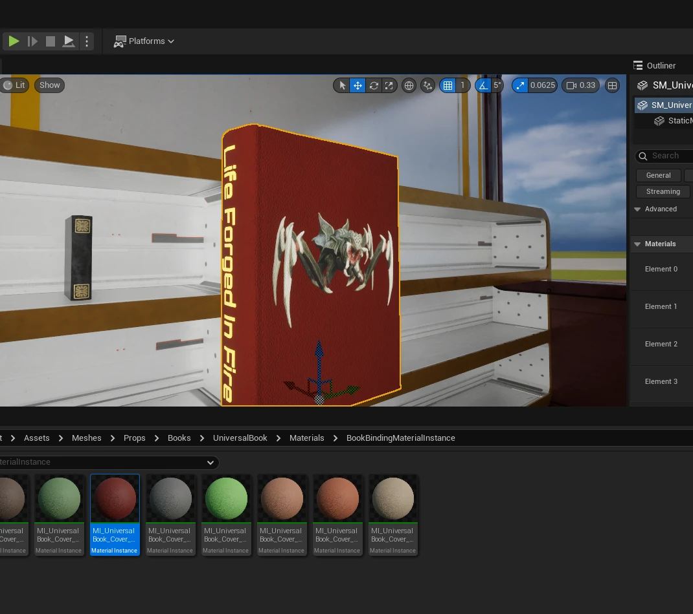

SpecterVirus is a true first-person horror shooter. Play as CIA operative Winslow and venture into a quarantined zone to find answers to many questions. Find all research documents in the level to uncover the truth behind all the reports coming in. I am the Combat, UI, Interactable Object, Gameplay, Menus, SFX, VFX, and Player programmer on this.
Want to learn more about Specter Virus?Check out the project here!
Beastslayer: Origins is a third-person game that blends deep character development, thrilling combat, and rich lore, all set in a universe brimming with mysteries. Players will face difficult choices, test their abilities against the deadliest Beasts, and uncover the secrets that could change the fate of the galaxy. This game is a personal on-going project more work is being done and many placeholders still remain while work continues.
Would you like to know more?Check out the project here!

I have designed a procedural book generator for my game Beastslayer: Origins to allow population of the Praelum building faster. This book generator can generate 262,000 unique asset permutations based off of 5 4K texture atlases and one empty texture.
Want to learn more about the Procedural Generator?Check out the project here!
VSF is a True FPS based in the distant future when most military forces replaced man with machine and AI. Operators in VSF are only called when major catastrophe looms as they do not follow normal military procedures. This game is a personal in-work project, and it is wired for EOS Shared in preparation of UE6 migration
Would you like to know more?Check out VSF here!